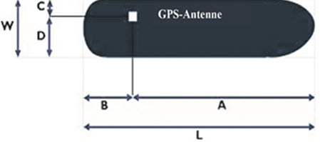
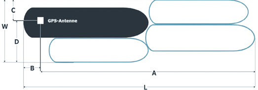
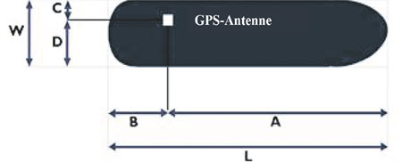
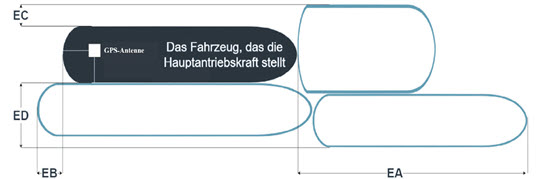

| 0 | under way using engine | in Fahrt mit Motorkraft |
| 1 | at anchor | vor Anker |
| 2 | not under command | manövrierunfähig |
| 3 | restricted manoeuvrability | manövrierbehindert |
| 4 | constrained by her draught | durch Tiefgang beschränkt |
| 5 | moored | festgemacht |
| 6 | aground | auf Grund |
| 7 | engaged in fishing | beim Fischfang |
| 8 | under way sailing | in Fahrt unter Segel |
| 9 bis 13 | reserved for future uses | reserviert für künftige Nutzung |
| 14 | AIS-SART (active); | AIS-SART (aktiv) |
| 15 | Not defined | nicht definiert |
|  |
| Erläuterungen zu den W, L, A, B, C und D Werten für ein Fahrzeug |
|  |
| Erläuterungen zu den W, L, A, B, C und D Werten für einen Verband |
|  |
| Erläuterungen zu den W, L, A, B, C und D Werten für ein Fahrzeug |
|  |
| Erläuterungen zu den EA, EB, EC und ED Werten für einen Verband |